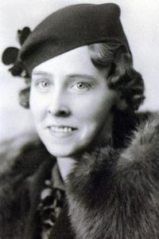

Julius Sandberg Johansen Fosland
M, #24911, f. 9 oktober 1870, d. 14 august 1957
Foreldre
Biografi
Julius Sandberg Johansen Fosland ble født den 9 oktober 1870 Grong, Nord-Trøndelag. Han giftet seg med
Jette Margrete Tøtdal den 4 juli 1896 på/i USA. Han giftet seg med
Christine Mathison den 30 desember 1907. Han døde den 14 august 1957 på/i USA. Han ble gravlagt på/i Palmyra Lutheran Cemetery, Hector, Renville County, Minnesota, USA.
Julius Sandberg Johansen Fosland was also known as Julius Sandborn Fosland. Han had reference number 3028. Han emigrerte til USA i 1886. Han. Da mange het Johnson fra før, endret Julius etternavnet til Fosland, som var navnet på gården han kom fra.
| Sist redigert |
7 mars 2025 10:59:19 |
John Alton Fosland
M, #24912, f. 30 november 1897, d. 14 juli 1990
Foreldre
Biografi
John Alton Fosland ble født den 30 november 1897 Hector, Renville County, Minnesota, USA. Han giftet seg med
Ann Stolar den 24 oktober 1950 på/i Cuyahoga, Ohio, USA. Han døde den 14 juli 1990 på/i Port Clinton, Ottawa, Ohio, USA. Han ble gravlagt på/i Palmyra Lutheran Cemetery, Hector, Renville County, Minnesota, USA.
John Alton Fosland was also known as "Jack." Han had reference number 3029.
| Sist redigert |
7 mars 2025 10:59:19 |
| Slektskap | 5-menning 3 ganger forskjøvet til Håkon Wahl |
Anton Theodore Cornelius Fosland
M, #24913, f. 29 september 1899, d. januar 1963
Foreldre
Biografi
Anton Theodore Cornelius Fosland ble født den 29 september 1899 Minnesota, USA. Han giftet seg med
Malinda M. Wulkan i 1928 på/i USA. Han døde i januar 1963 på/i USA. Han ble gravlagt på/i Sunset Memorial Park Cemetery, Minneapolis, Hennepin, USA.
Anton Theodore Cornelius Fosland had reference number 3030.
| Sist redigert |
4 mars 2025 12:29:56 |
| Slektskap | 5-menning 3 ganger forskjøvet til Håkon Wahl |
Judith Catherine Fosland
K, #24914, f. 7 oktober 1901, d. 17 januar 2001
Foreldre

Judith C. Fosland
Biografi
Judith Catherine Fosland ble født den 7 oktober 1901 Renville County, Minnesota, USA. Hun døde den 17 januar 2001 på/i Minnesota, USA. Hun ble gravlagt på/i Palmyra Cemetery, Hector, Renville County, Minnesota, USA.
Judith Catherine Fosland had reference number 3031. Hun bodde på/i Minneapolis, Hennepin County, Minnesota, USA.
| Sist redigert |
7 mars 2025 10:59:19 |
| Slektskap | 5-menning 3 ganger forskjøvet til Håkon Wahl |
Olaf Jonathon Fosland
M, #24915, f. 10 oktober 1904, d. 19 mars 1968
Foreldre
Biografi
Olaf Jonathon Fosland ble født den 10 oktober 1904 USA. Han giftet seg med
Louise C. Beske på/i USA. Han døde den 19 mars 1968 på/i Hennepin County, Minnesota, USA. Han ble gravlagt på/i Fort Snelling National Cemetery, Minneapolis, Hennepin County, Minnesota, USA.
Olaf Jonathon Fosland had reference number 3032.
| Sist redigert |
4 mars 2025 12:29:56 |
| Slektskap | 5-menning 3 ganger forskjøvet til Håkon Wahl |
Ann Stolar
K, #24916, f. omtrent 1900, d. 1982
Biografi
Ann Stolar ble født omtrent 1900 Canada. Hun giftet seg med
John Alton Fosland den 24 oktober 1950 på/i Cuyahoga, Ohio, USA. Hun døde i 1982.
Ann Stolar was also known as Ann Fosland. Hun was also known as Ann G. Bernsee. Hun had reference number 3033.
| Sist redigert |
26 august 2024 13:11:26 |
Malinda M. Wulkan
K, #24917, f. 1902, d. 1992
Biografi
Malinda M. Wulkan ble født i 1902 Minnesota, USA. Hun giftet seg med
Anton Theodore Cornelius Fosland i 1928 på/i USA. Hun døde i 1992 på/i Minnesota, USA. Hun ble gravlagt på/i Sunset Memorial Cemetery, Minneapolis, Hennepin County, Minnesota, USA.
Malinda M. Wulkan was also known as Malinda M. Fosland. Hun was also known as Melinda Wulkan. Foreldrene, Frank og Augusta, var født i Sverige men bosatt i Minnesota. Hun had reference number 3034.
| Sist redigert |
4 mars 2025 12:29:56 |
Kenneth Charles Fosland
M, #24918, f. 1 august 1929, d. 11 november 1996
Foreldre
Familie: Doris Beverly Rosedahl
| Datter | Lynn Ann Fosland |
| Datter | Nancy Fosland |
| Sønn | Mark Kenneth Fosland |
Biografi
Kenneth Charles Fosland ble født den 1 august 1929 Minnesota, USA. Han giftet seg med Doris Beverly Rosedahl på/i USA. Han døde den 11 november 1996 på/i Hennepin County, Minnesota, USA.
Kenneth Charles Fosland had reference number 3035.
| Sist redigert |
4 mars 2025 12:29:56 |
| Slektskap | 6-menning 2 ganger forskjøvet til Håkon Wahl |
Doris Marie Fosland
K, #24919, f. 17 juli 1927, d. 11 mars 1994
Foreldre
Familie: Charles William Wolter
| Sønn | Kenneth C. Wolter |
| Datter | Jennifer Marie Wolter |
Biografi
Doris Marie Fosland ble født den 17 juli 1927 Minnesota, USA. Hun giftet seg med Charles William Wolter på/i USA. Hun døde den 11 mars 1994 på/i Hennepin County, Minnesota, USA.
Doris Marie Fosland was also known as Wolter. Hun had reference number 3036.
| Sist redigert |
10 juni 2026 16:49:26 |
| Slektskap | 6-menning 2 ganger forskjøvet til Håkon Wahl |
{kind=link}